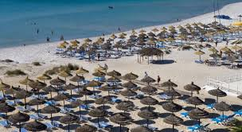
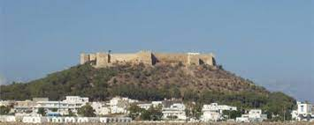
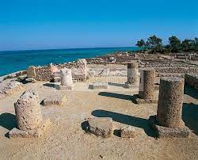
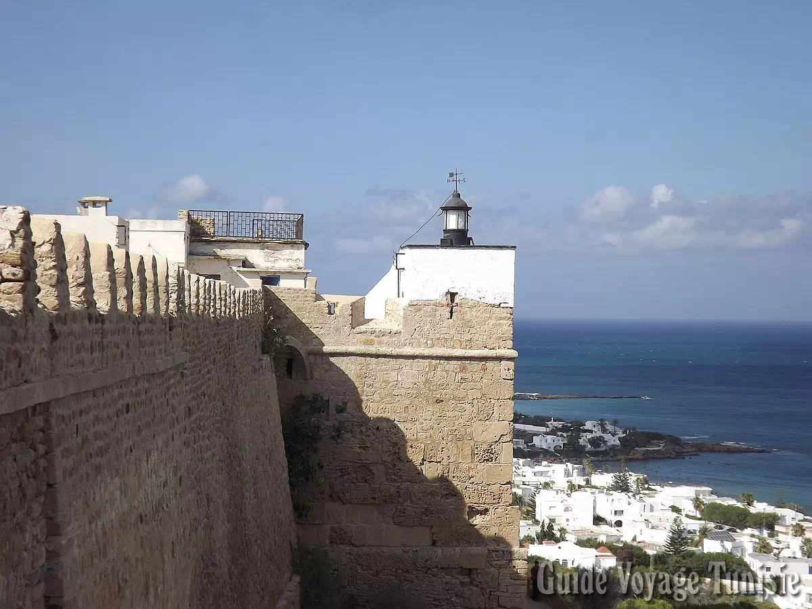
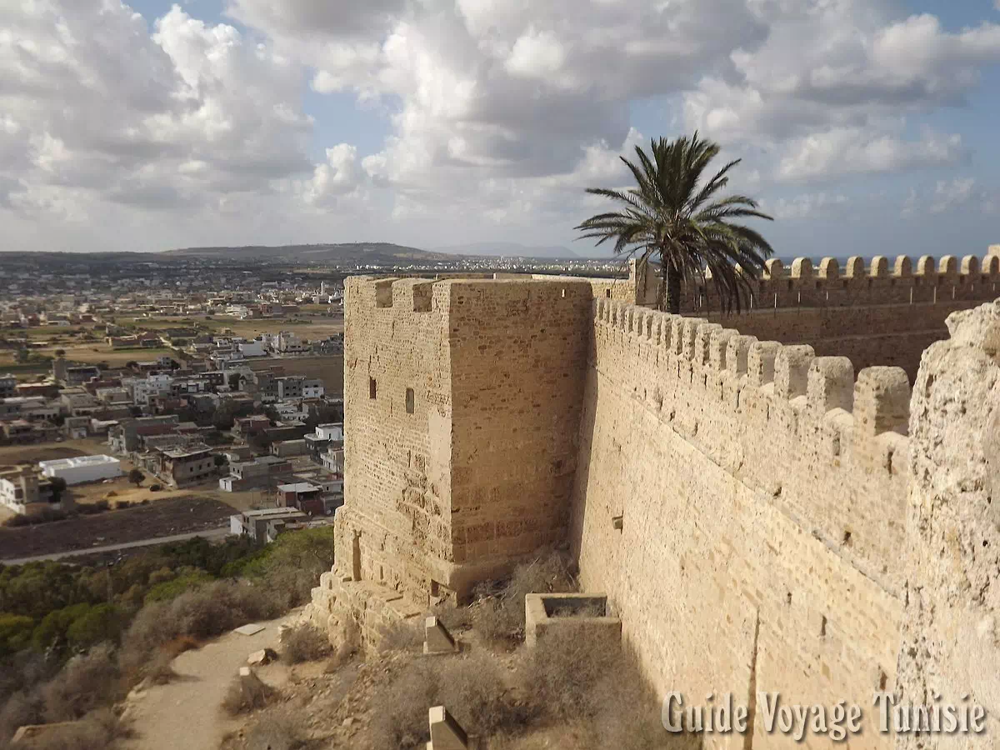
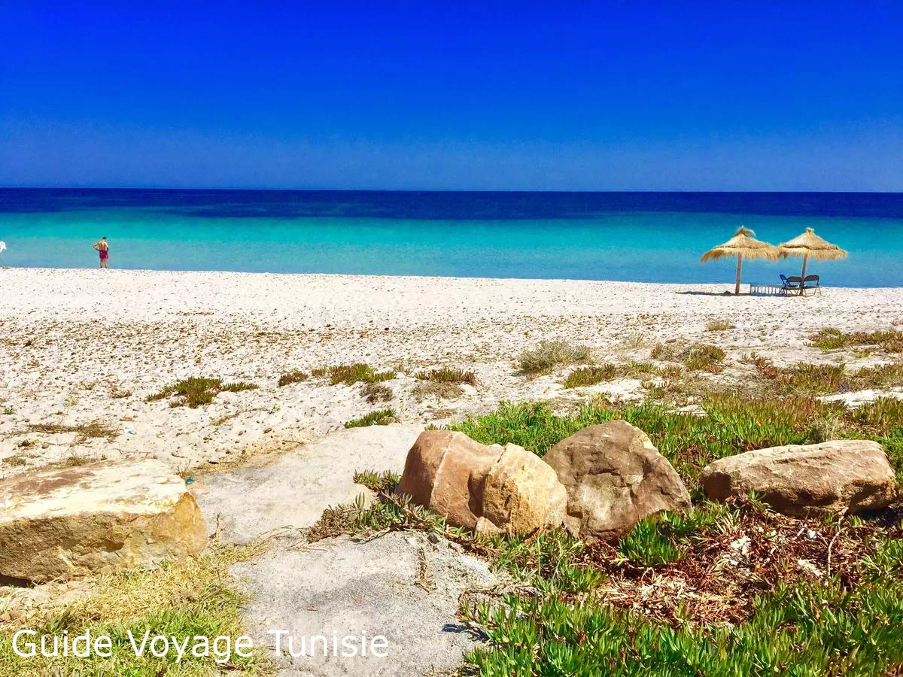

Généralité
- La ville de Kélibia, située à la pointe du Cap Bon, à 94 km de Tunis, est une ville de 49 000 habitants. Elle est la troisième ville du gouvernorat de Nabeul après Nabeul et Hammamet. Ses revenus économiques proviennent de l’agriculture, la pêche, l’industrie du meuble et le tourisme.
- Actuellement, Kélibia est une ville touristique connue pour ses belles plages et sa forteresse (« Bordj »), mais aussi pour ses menuisiers. Kélibia possède également le 4ème port de pêche de la Tunisie, et ses vignobles offres le muscat de Kélibia (vin blanc très prisé par les tunisiens).
- Kélibia est une petite ville du Cap Bon, connue pour ses magnifiques plages et son authenticité, une authenticité qu’elle a su garder et voire même développer au fil des années.
Tourisme
- L’artisanat réside dans la réalisation de meubles anciens ou de style. Kélibia est devenue une référence dans le savoir faire. Sa production se vend aussi bien en Tunisie qu’à l’étranger.
- Tourisme: les plages de Kélibia possèdent le sable le plus blanc et le plus fin de la Tunisie. La proximité de l’Italie, la Sicile étant à 200 km et l’île Pantelleria à 70, est un atout pour attirer de plus en plus de touristes italiens.
- Les hôtels se trouvent à El Mansourah, une zone touristique en bordure de mer. C’est un lieu calme où il fait bon de vivre.
- La plus grande manifestation culturelle réside dans l’organisation du festival du film amateur au mois de juin de chaque année.
Où Aller
Plage de Mansourah |
 |
Le fort du Kélibia |
 |
Kerkouane |
 |
La ville de Kélibia en images


